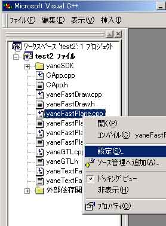
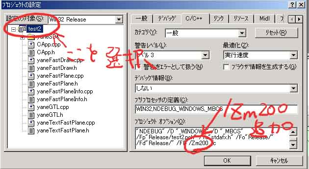

コンパイルするための注意点：
yaneSDK2ndのversion 1.50から、CFastDraw,CFastPlaneという、高速描画のためのクラスが追加になりました。
このクラスが、描画のための非常に複雑なクラスで、実際は、yaneGTL.hという、描画のためのfunctor集合を利用するのですが、こいつがまた大きいのです。
functorの特徴として、inline展開されることにより、呼び出しのオーバーヘッドの軽減等により高速化されるというのがあるのですが、Visual C++では、デバッグモードではディフォルトではinline展開されません。そこで、デバッグモードでは、非常に遅いということになります。
yaneGTL.hを実際に読み込んで、使用しているのは、yaneFastPlane.cppという、CFastPlaneの実装部においてなので、このファイルだけ、コンパイルオプションを変更してやります。具体的には、ワークスペースのyaneFastPlane.cppのところで右クリックして、設定を選択。

「C/C++」タブの「最適化」カテゴリの中の、「関数のインライン展開の制御」です。このままだとコンパイルエラーが出るので、「C/C++」タブの「一般」カテゴリの中の、「デバッグ情報」を「エディットコントロール用の…」、「debug情報 - C7互換」以外にすれば、コンパイルは通ります。（※ 「行番号のみ」ではまともにデバッグできないので、 「debug情報 - プログラムデータベース」を選択すると良いようです）
次に注意すべきことは、yaneFastPlane.cppはコンパイル時のヒープを使い果たしてしまうということです。これは、Visual C++が安全のための最大ヒープサイズを100MB程度に設定しているのですが、これを増やしてやります。具体的には、メニューバーから、プロジェクト⇒設定を選択します。そのあと、

です。／Ｚｍ２００で、最大ヒープサイズは200MBになります。これでコンパイルが出来るようになりました。（yaneFastPlane.cppのコンパイルで、もっと食う可能性がありますんで、これでもヒープエラーが出る場合は/Zm250とか/Zm300とか増やしてください）
次に、実行ファイルサイズについてです。
CFastPlaneは、各画面モードすべての描画ルーチンを持っています。すなわち、RGB565,RGB555,RGB888,BGR888,XRGB8888,XBGR8888,ARGB4565,ARGB4555,ARGB8888,ABGR8888に対して、すべての描画ルーチンを持っているわけです。非常に大きなルーチンなので、CFastPlaneを含むと、実行ファイルのサイズは非常に大きくなります。（だいたいリリースビルドでも400KB以上になる）
そこで、CFastPlaneを使わない場合は、config/yaneConfig.hで、使わないように設定できますので、そのように設定することを強くお勧めします。